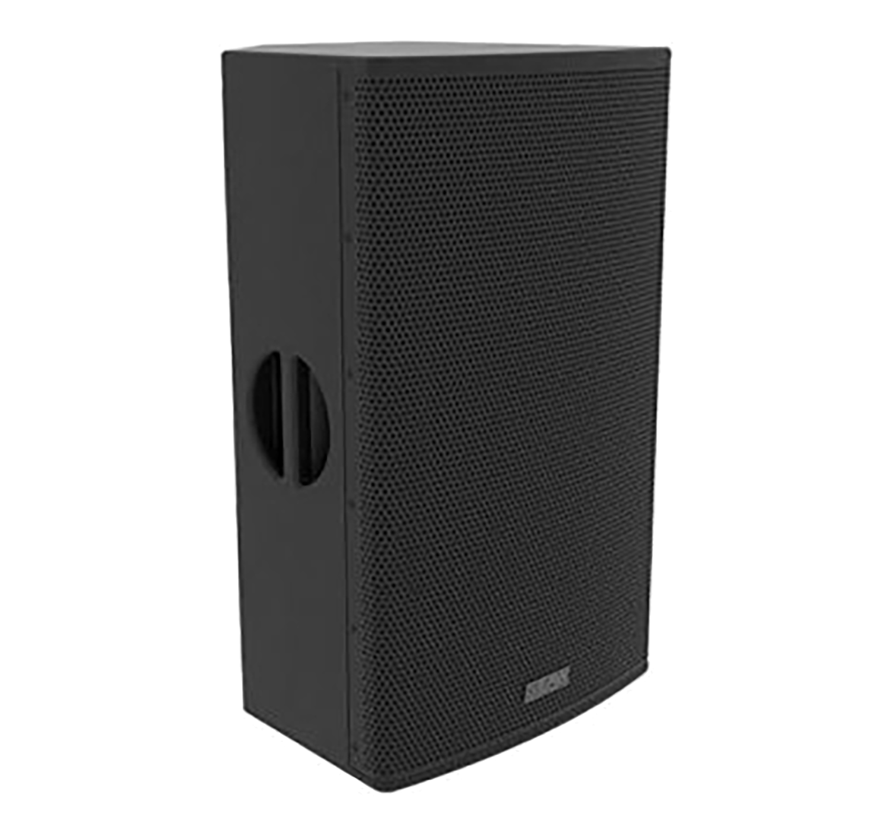

Skip to main content
Home
Services
Equipment
Sales
About
Contact
Back to Equipment
Professional Speaker Systems
Browse our selection of professional speakers and sound reinforcement systems
Adaptive Systems
Anya
Frequency Response: 40Hz-18kHz ±3dB
Peak Output: 146dB SPL
Coverage: Adaptive up to 70° vertical
22 Transducers with Individual DSP and Amplification
Resolution™ 2 Software Control
Key Features:
Adaptive Performance™ technology
Column arrays can be flown straight or curved
Integrated DSP and amplification
Dante™ digital audio networking
Weather resistant construction
Request Quote
Anna
Frequency Response: 60Hz-19kHz ±3dB
Peak Output: 144dB SPL
Coverage: Adaptive up to 50° vertical
14 Transducers with Individual DSP and Amplification
Resolution™ 2 Software Control
Key Features:
Adaptive Performance™ technology
Compact 3-way design
Integrated DSP and amplification
Dante™ digital audio networking
Compatible with Anya systems
Request Quote
Line Array Systems
NTX210L
Frequency Response: 55Hz-18kHz ±3dB
Peak Output: 140dB SPL
Coverage: 110° horizontal x 12° vertical
2x 10-inch LF, 4x 2.5-inch MF, 2x 1.4-inch HF
DynO™ Digital Optimization
Request Quote
RSX208L
Frequency Response: 63Hz-20kHz ±3dB
Peak Output: 132dB SPL
Coverage: 110° horizontal x 10° vertical
2x 8-inch LF, 2x 1.4-inch HF
Greybox™ Processing
Request Quote
Point Source Speakers
RS121
Frequency Response: 35Hz-150Hz ±3dB
Peak Output: 132dB SPL
1x 21-inch LF Driver
Greybox™ Processing
Compact Single 21" Design
Request Quote

RS153
Frequency Response: 35Hz-200Hz ±3dB
Peak Output: 134dB SPL
3x 15-inch LF Drivers
Greybox™ Processing
Triple 15" High-Power Design
Request Quote
RL12
Frequency Response: 55Hz-20kHz ±3dB
Peak Output: 129dB SPL
Coverage: 90° x 60°
12-inch LF, 1.4-inch HF
Greybox™ Processing
Request Quote
RL15
Frequency Response: 45Hz-20kHz ±3dB
Peak Output: 131dB SPL
Coverage: 90° x 60°
15-inch LF, 1.4-inch HF
Greybox™ Processing
Request Quote
Stage Monitors
MW15
Frequency Response: 50Hz-20kHz ±3dB
Peak Output: 133dB SPL
Coverage: 90° x 60°
15-inch LF, 1.75-inch HF
Greybox™ Processing
Request Quote
MW12
Frequency Response: 55Hz-20kHz ±3dB
Peak Output: 131dB SPL
Coverage: 90° x 60°
12-inch LF, 1.75-inch HF
Greybox™ Processing
Request Quote
Subwoofers
OTTO
Frequency Response: 25Hz-60Hz ±3dB
Peak Output: 148dB SPL
Dual 18-inch LF Drivers
Resolution™ 2 Software Control
Adaptive Performance™ technology
Request Quote
RSX18F
Frequency Response: 35Hz-150Hz ±3dB
Peak Output: 134dB SPL
18-inch LF Driver
Greybox™ Processing
Compact Single 18" Design
Request Quote
SBX118
Frequency Response: 32Hz-200Hz ±3dB
Peak Output: 133dB SPL
18-inch LF Driver
Greybox™ Processing
Compact Portable Design
Request Quote
SBX218
Frequency Response: 28Hz-200Hz ±3dB
Peak Output: 138dB SPL
Dual 18-inch LF Drivers
Greybox™ Processing
High-Power Dual 18" Design
Request Quote
RL18S
Frequency Response: 35Hz-150Hz ±3dB
Peak Output: 132dB SPL
18-inch LF Driver
Greybox™ Processing
Compact Single 18" Design
Request Quote
Line Array Systems
GP18A
Frequency Response: 35Hz-20kHz ±3dB
Peak Output: 134dB SPL
18-inch LF + 2x 10-inch MF + 2x 1.75-inch HF
Built-in DSP Processing
Active Powered Line Array System
Request Quote
GP18
Frequency Response: 35Hz-20kHz ±3dB
Peak Output: 132dB SPL
18-inch LF + 2x 10-inch MF + 2x 1.75-inch HF
External DSP Processing
Passive Line Array System
Request Quote
Active Loudspeakers
K8.2
Frequency Response: 59Hz-20kHz ±3dB
Peak Output: 128dB SPL
Coverage: 105° Axisymmetric
8-inch LF, 1.4-inch HF
Advanced DSP with Factory Presets
Request Quote
CP8
Frequency Response: 56Hz-20kHz ±3dB
Peak Output: 124dB SPL
Coverage: 90° Axisymmetric
8-inch LF, 1.4-inch HF
Built-in DSP with Application Modes
Request Quote
Portable PA Systems
EON ONE MK2
Frequency Response: 37Hz-20kHz ±3dB
Peak Output: 123dB SPL
Coverage: 140° H x 30° V
6x 2.5" Drivers + 1x 10" Woofer
Built-in 8-Channel Digital Mixer
Request Quote
Active Loudspeakers
SRM150
Frequency Response: 60Hz-20kHz ±3dB
Peak Output: 120dB SPL
Coverage: 90° Conical
5.25-inch LF, 1-inch HF
Built-in 3-Channel Mixer
Request Quote
Studio Monitors
KH 120
Frequency Response: 52Hz-21kHz ±3dB
Peak Output: 111.1dB SPL
Coverage: 110° H x 110° V
5.25-inch LF, 1-inch HF
Mathematically Modeled Dispersion™
Request Quote